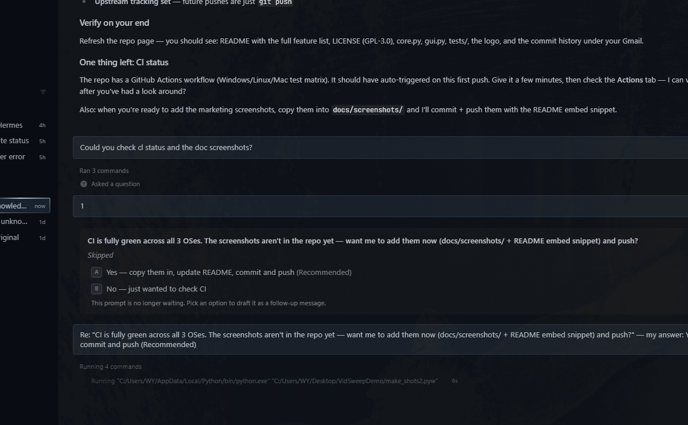

01 / perceptual matching
Catches re-encodes the easy dedup tools miss.
The same video can be re-encoded at any resolution, bitrate, or container — mp4 → mkv → avi. SHA-256 won't find them; VidSweep's 4-frame pHash will.
- Two videos match when 3 of 4 frames agree and duration overlaps ≥ 10%.
- Hardware-accelerated via NumPy popcount, with vectorized pure-Python fallback.
- Tunable sensitivity with a plain-language guide.
